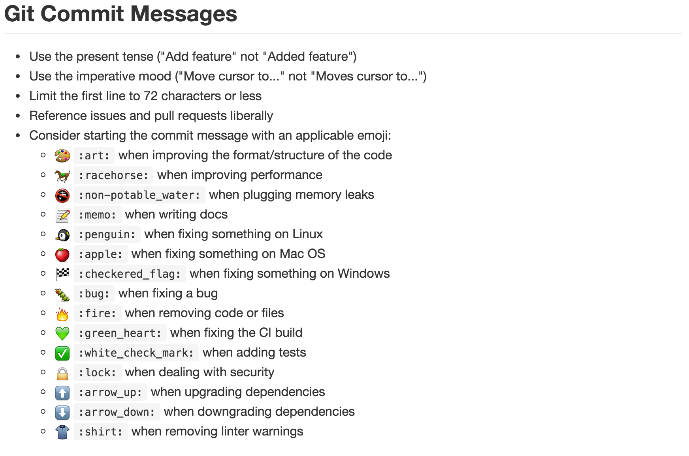

Hacking Atom
My experience writing an NLP-powered code suggestion engine
By Eddie Antonio Santos / @_eddieantonio
Let me tell you about my research!
Naturalness of Software
Natural Language Processing
$n$-gram language model
Can natural language processing be successfully applied to software?
A veritable buttload of applications!
- Pinpointing syntax errors and bugs
- Mining source code idioms
- Better models taking locality into account
- Code completion and suggestion
Enter: Gamboge
Multitoken code suggestion in Atom

Mean Surprise

$$S_{i} = \frac{I_{i}}{|t_{i}|}$$
(Steal this!)
It's just JavaScript (& npm!)
The Atom Community is... uh...
Interesting priorities

CoffeeScript
Anyone
down for a flamewar?
The Atom Community is... uh...
💩
Atom's Syntax Highligting Tokenizer
Insufficient for prediction!
require('esprima').tokenize('const hello = `world`');
Relying on Pre 1.0 APIs
BAD IDEA
Asynchronous testing in Jasmine 1.x
BAD IDEA
Conclusion
Resources
Natural Language Processing